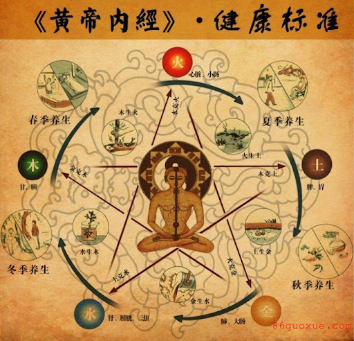
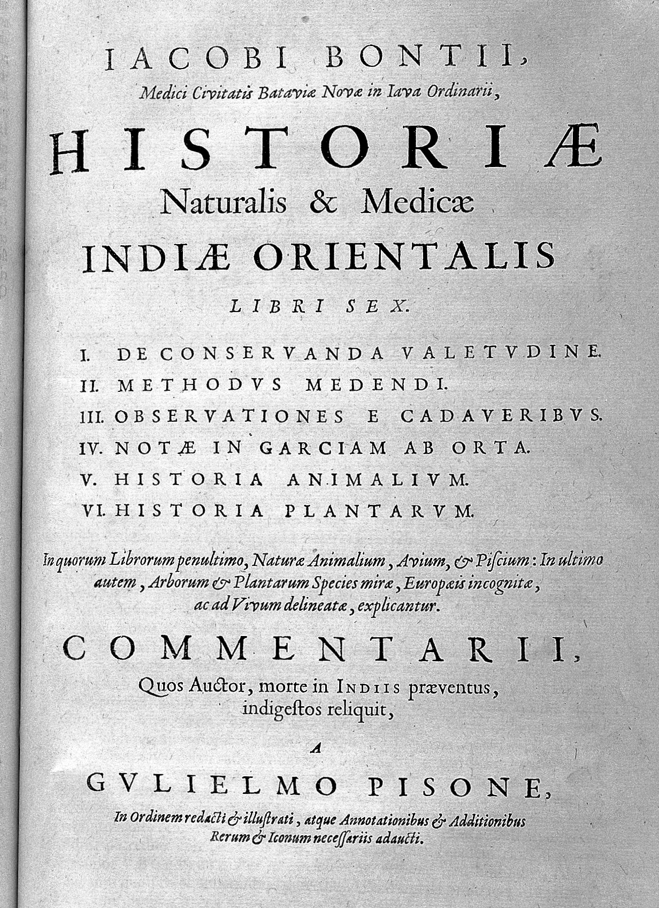

Acupuncture History
Introduction:
The history of acupuncture is often presented as a composite of legends, myths, personal interpretations and political biases. Perhaps the intention is to keep it simple and convincing.
On this page, we present the history based only on the factual material and physical evidence that illustrates the more interesting, intriguing and controversial evolutionary aspects that acupuncture has made through the centuries.
Philosophical Background
Practical applications of acupuncture techniques can be traced back to the dawn of civilization. Apparently, acupuncture was practiced in many ancient cultures around the world, as you will see on this page.
The Chinese formalized it and presented it into modern times. Acupuncture as a system of knowledge is deeply rooted in Chinese philosophy.
However, the notion of "unified" Chinese philosophy is inaccurate. In fact, it is a mixture of various ideologies and beliefs.
Confucianism, Taoism (Daoism), and Buddhism form the three main pillars of Chinese thought, keeping in mind that they are not monolithic but multifaceted traditions with complex internal divisions.
Confucianism, Taoism of all trends, different branches of Buddhism, all represent Chinese philosophy and heavily influenced Traditional Chinese Medicine and acupuncture.
These teachings have determined Chinese society for thousands of years. Acupuncture, as a medical system, was an integral part of this social environment. Without this social background, it would have been inconceivable.
The evolutions of the official policy would lift certain ideology while the other would fall out of favor. For instance, Confucianism was dominant philosophy when Buddhism entered China in the first century AD.
But two centuries earlier, the Chinese Emperor Qin Shi Huang burned most of the Confucian literature in the country and sentenced thousands of intellectuals to years of forced labor on the Great Wall as political prisoners, where most of them perished.
Traditional schools of acupuncture, with their diversity, sometimes appear inconsistent or contradictory. In reality, they bear influence of different philosophies and reflect different theoretical backgrounds.
This explains differences that we see in various acupuncture schools, their terminology, clinical interpretations and emphasis on different basic concepts.
First Physical Evidence
 Ironically, the first physical evidence of acupuncture was found not in China but in central Europe.
Ironically, the first physical evidence of acupuncture was found not in China but in central Europe.
In 1991 the scientific world was rocked by the discovery of "The Ice Man", a 5,300-year-old mummified man found in the Italian Alps along the border with Austria. The frozen body was remarkably well preserved.
One of the most remarkable discoveries was a complicated system of bluish-black tattoos running along his back, right knee and left ankle. The locations of the "tattoos" corresponded precisely to acupuncture points and meridians, including the 'master point for back pain'.
Apparently he suffered from back pain that was confirmed by a series of X-rays of his body, with evidence of acute arthritis in the lumbar spine. Otherwise he was in good health, he had all his teeth with no cavities. He was approximately 45 years old at the moment of sudden death...
China & East Asia

Acupuncture's beginnings lie in China but there is a lot of contradictory information concerning the date of its genesis. What is certain is that acupuncture was used around 2000 BC in China.
Drawings dating from around 1600 BC reveal that sharpened bamboo and bronze needles were used in treatment. Excavations have uncovered sharpened stones dating from around 3000 BC which may indicate the beginnings of acupuncture.
The first medical account of acupuncture was NEI CHING SU WEN "The Yellow Emperor's Classic of Internal Medicine" which dates from about 200 BC.
Throughout the centuries, acupuncture flourished in China despite the periods when it was suppressed (from the Qing Dynasty to the Opium Wars: 1644-1840).
In the 20-th century, following the Revolution of 1911 Western Medicine was introduced in China. Acupuncture and herbs remained the only option in rural communities, and the term "barefoot doctor" emerged. In 1932 when Chang Khi Chek seized power in China, acupuncture was banned in the cities.
Chairman Mao took over in 1945 and Chang Khi Chek escaped to the island of Formosa (now Taiwan).
China was closed to the West and acupuncture was restored as the method of healing in a country deprived of antibiotics and western medical equipment.
From the 1970-s China's policy became more open, and its medical system benefits from modern technologies while remains loyal to the time-honored tradition.
Europe

Traditionally associated with China, Japan, and Korea, acupuncture is incorporated into medical practice in Europe. Acupuncture was introduced in Europe by European physicians who brought it from Far Eastern colonies. That mode of introduction made it credible.
The first known European acupuncture publication was dated 1658 and was published in Holland. The Dutch doctor Jakob de Bondt published an extensive, six volume work about the history of nature and medicine in East India.
Modern medicine as we know it today did not exist yet, and there were 300 years of parallel development, interaction, and scientific scrutiny.
There are similarities and differences in the contexts of European and Chinese acupuncture. The similarity is that there is close communication and contribution between acupuncturists practicing in Europe and China. European professional's practice based on the principles of Traditional Chinese Medicine. Chinese practitioners promptly accommodate and incorporate new European techniques such as electropuncture and concepts like auriculopuncture.
The difference is that European acupuncture coexists with highly advanced, state-of-the-art modern medicine, and Chinese acupuncture does not. Acupuncture in China quite often aims to replace conventional medicine to fill the gaps and deficits in healthcare.
Europe
In the United states, the first publication on acupuncture in 1826 belongs to Bache Franklin M.D., great grandson of Benjamin Franklin.
In 1892, Sir William Osler B.T., M.D., FBS in his fundamental work "the Principles and Practice of Medicine" featured acupuncture as recommended treatment for lumbago.
Rapid advance of Western medicine and biological science in the beginning of twentieth century marginalized acupuncture practice, and after the 1920's acupuncture was rarely ever used with the exception of Chinatowns.
It was not until 1971, when interest to acupuncture revived.
James Reston reporter for the New York Times with Nixon's Chinese trip had an emergency appendectomy with acupuncture anesthesia His post operative pain was relieved by acupuncture at the Anti-Imperialist Hospital in Peking, China. This brought great publicity to acupuncture and renewed interest in this form of treatment.
In 1996 in America, needles were removed from the "investigative" category to accepted medical instruments
In 1997 The National Institute of Health issued the Consensus Statement that recognized that "Acupuncture as a therapeutic intervention is widely practiced in the United States" and "may be useful as an adjunct treatment or an acceptable alternative or be included in a comprehensive management program." NIH has formed a department of Alternative Health care to provide needed research funding in alternative avenues of medical care.
Copyright Policy
Please, feel free to copy and use this material with the proper reference. This courtesy is expected. Thank you.
This page last updated: 10-July-2024